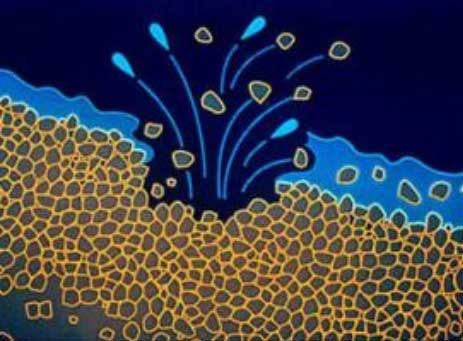
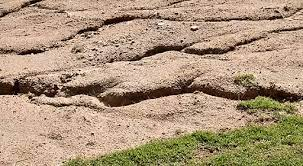
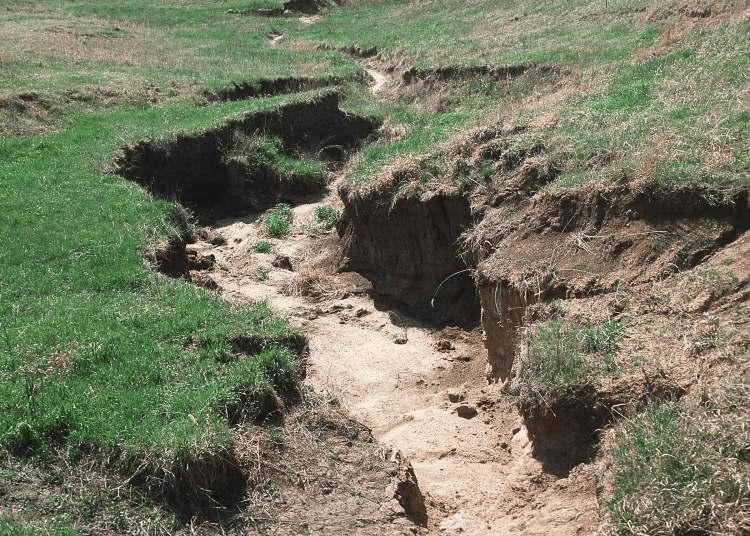
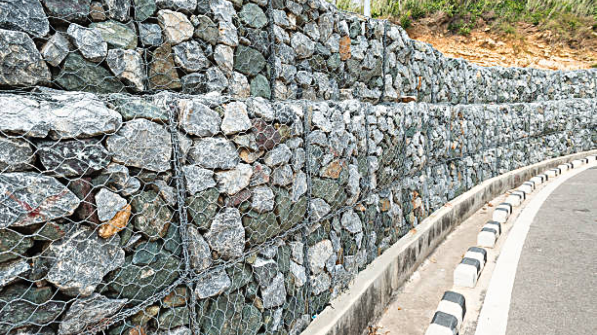

Meaning of Soil Erosion
Soil erosion is the process by which topsoil is gradually removed from one place, transported and then deposited to another place by action of water, wind, animals, and human beings.
Agents of Soil Erosion
- Water
- Wind
- Animals
- Human beings
Types of Soil Erosion
- Splash erosion
- Rill erosion
- Sheet erosion
- Gully erosion
Splash Erosion
Splash erosion is the first stage in the soil erosion process by the action of water. When raindrops hit the bare ground, the soil is broken into soil particles. The lighter soil particles are removed and splashed in various directions onto the soil surface by the force or energy of the raindrops.
Therefore, small circular depressions can be seen where soil particles have been removed by splash erosion.
Splash erosion occurs mainly during heavy rainfall that falls for a short duration. Splash erosion causes more damage to soil on sloped land than flat land. The bigger raindrops have more force or energy than smaller raindrops and therefore cause more splashing.
It is also called raindrop erosion because it results from the effect of raindrops on the soil.
Demonstrating Splash Erosion
Pupils activity: Identifying splash erosion in the environment.
Sheet Erosion
Sheet flow refers to a thin and uniform layer of moving water. Sheet erosion occurs when a thin layer of soil is removed uniformly by surface runoff on a flat or gently sloping bare land.
Sheet erosion occurs when there is heavy rainfall that falls for a short duration. In such situations, soil is unable to absorb much of the rainwater, which therefore flows as surface runoff. The heavy raindrops splash soil particles while the surface runoff carries the fine soil particles, carrying most of the nutrients.
It is not easy to notice sheet erosion because the topsoil is removed evenly. By the time this type of erosion is detected, most of the topsoil will have been lost.
Most common on recently cultivated land situated on smooth gentle slopes.
Signs/Indicators of Sheet Erosion
- Stones below the topsoil are exposed.
- Roots of plants including crops, grass, and trees are exposed.
- Eroded soil and crop remains are deposited at the lower areas of the slope.
- Crop yields reduce season after season because of declining soil fertility.
Pupils activity: Identifying splash erosion in the environment.
Rill Erosion
Rill erosion occurs in places where continuous sheet erosion has taken place. In such places, the runoff carrying soil particles concentrates in small channels or rills down a slope. Several small rills join to form a large rill.
As runoff flows along the rill, soil is eroded on the sides and the bottom of the rills. The rills reach a depth of up to 30 cm.
Rill erosion can be observed when a freshly cultivated land experiences heavy rainfall immediately after cultivation.
Rills can easily be removed during normal cultivation of land using tools such as hoes and jembes.
Rills can also be observed on overgrazed land as well as on paths created due to frequent movements by humans.
Pupils activity: Observing rill erosion in our environment.
Gully Erosion
Gullies are long deep ditches with steep sides. They are mainly formed on steep slopes where rill erosion has taken place for a long time. As the runoff flows down the slope, it widens and deepens the rills, thus creating deep ditches.
Gullies are not easy to remove by means of normal cultivation using tools such as hoes because of their great depth.
Pupils activity: Observing gully erosion in our environment.
Methods of Controlling Soil Erosion
To control soil erosion effectively, it is important that the soil surface is protected by suitable ground cover. The ground cover controls splash by intercepting the raindrops before they hit the soil particles. Ground cover also prevents sheet erosion by reducing the speed of runoff and therefore allowing most of the water to infiltrate into the soil.
Ground covers include:
- Cover crops
- Mulches
- Growing grass or vegetation on land and on drainage channels
Trees also prevent the soil against erosion by wind in various areas, especially in arid and semi-arid areas.
Gabions or check dams constructed across gullies to trap the soil but allow water to pass through.
Identifying Methods of Controlling Soil Erosion
- Cover crop
- Contour ploughing
- Strip cropping
- Crop rotation
- Conservation tillage
- Avoid overgrazing
- Reforestation
- Improving drainage
- Building terraces
Pupils activity: Controlling soil erosion in our environment.
Importance of Soil Conservation in Our Environment
- It helps protect natural resources and watersheds, restores habitats for plants and wildlife, improves water quality, and makes soil healthier.
- Soil is one of the most valuable resources for any agricultural activity. We depend on it for food, employment, and income. Some domestic animals also depend on soil for their pasture.
- If soil is washed away, our land will be infertile, as a result, water bodies will be destroyed, and people can face hunger.
- Take measures to prevent soil erosion by taking good care of the soil.
- Apply appropriate soil erosion control measures if soil erosion has taken place. The measures will prevent further loss of soil and thus restore the health and beauty of our environment.